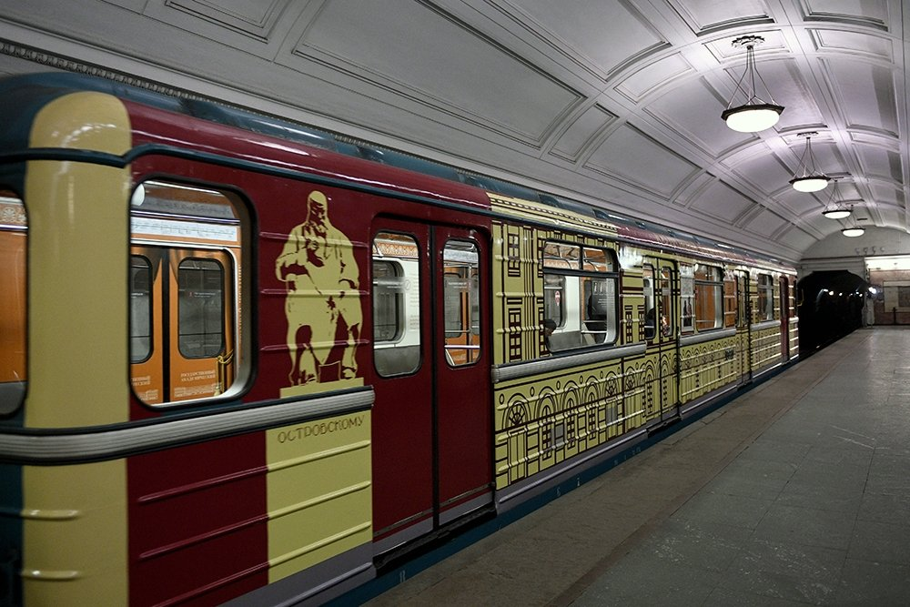
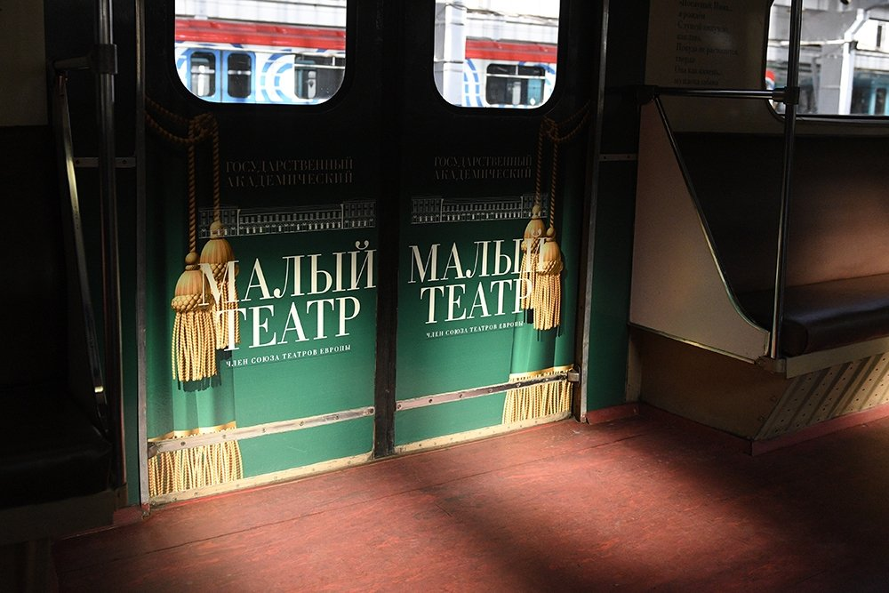
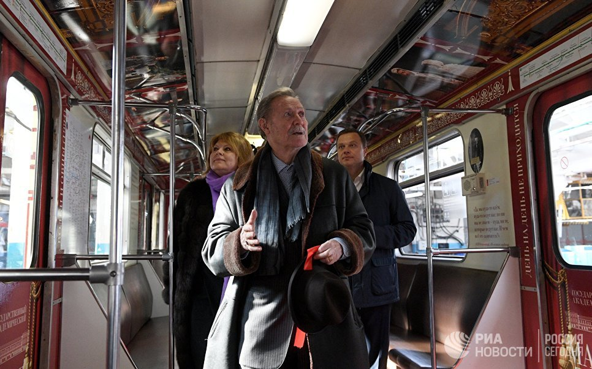
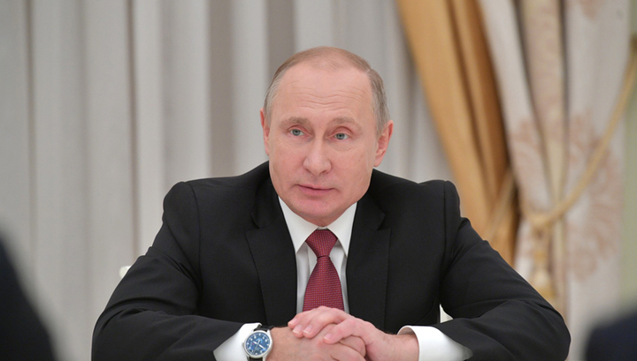

Новости культуры
В московском метро запустили тематический поезд "Малый театр"
Тематический поезд, посвященный Малому театру России, вышел на Замоскворецкую линию московского метро в пятницу, за полгода новый поезд перевезет порядка 2 миллионов человек, рассказал заммэра столицы, глава департамента транспорта Москвы Максим Ликсутов.
 "Для нас это символ сотрудничества правительства Москвы и Малого театра. Это поезд, который будет ездить на Замоскворецкой линии и в течение полугода увидит без малого примерно 2 миллиона человек, в котором на протяжении всех вагонов видна история развития Малого театра да и вообще театра в России", — сказал Ликсутов журналистам.
 Заммэра отметил, что московский транспорт выполняет не только свои непосредственные функции, но и "погружает пассажиров в историю", в данном случае, историю лучших театров России. "Поэтому я уверен, что пассажиры будут с удовольствием выбирать именно этот поезд, чтобы погрузиться в атмосферу замечательного Малого театра", — добавил он.
Вагоны поезда оформлены фотографиями спектаклей разных лет, поставленных в Малом театре, на стенах размещены цитаты героев из классических произведений. Отдельный вагон посвящен деятельности театра во время Великой Отечественной войны. Помимо этого, ведущие артисты театра расскажут пассажирам состава интересные факты из истории и озвучат цитаты драматургов.
 "Я когда увидел этот поезд, вспомнил все свое детство, хотите – верьте, хотите – нет. Я впервые в Москве вышел из метро в 1953 году и увидел Малый театр. С этого началась моя жизнь и биография. И эти надписи в поезде — это целая история. Я уверен, что те, кто будут ездить в этом поезде, узнают огромную 263-летнюю историю старейшего русского театра. Поэтому у коллектива большая благодарность, и я ее передаю", — заключил художественный руководитель Малого театра Юрий Соломин.
30.03.2018
Владимир Путин призвал создать в регионах России сеть культурных центров
 Президент России заявил о необходимости создания в регионах России развитой сети культурных центров. Об этом он заявил на встрече со своими доверенными лицами.
«Такую сеть надо создавать по всей стране, где была бы активная выставочная деятельность, активная театральная жизнь, подготовка кадров на местной почве», - отметил Владимир Путин.
Президент отметил, что в среднем создание одного такого культурного центра будет стоить от полутора до двух миллиардов рублей.
30.01.2018

Другие новости
MMA
Хабиб vs Фергюсон: как это будет [...]
Ронда Раузи: «Было время, когда я просто искала способ достойно уйти из UFC»[...]
Наука
Ученые создали рыбу-робота для изучения подводного мира [...]
Ученые открыли новую форму света [...]
Футбол
В «Зените» пообещали «всех рвать» [...]
Де Хеа попросил продать его в «Реал» [...]
Биатлон
Тренер Гросс сменит сборную России по биатлону на австрийскую команду [...]
Чемпионка мира Юрьева об основной проблеме в российском биатлоне [...]
Новости IT-индустрии
Samsung принимает заказы от производителей систем-майнеров [...]
Nougat стала самой популярной версией Android [...]
Кибербезопасность
Злоумышленники пытаются использовать уязвимости процессоров [...]
AMD Zen 2 не будет иметь уязвимостей Spectre [...]